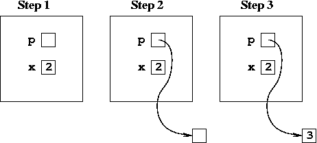
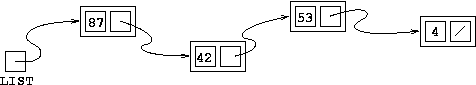

In this unit, we’ll see how to make a list of things without using arrays, just by linking a bunch of structs together in a chain. This idea of putting together small pieces (or “nodes”) to organize a large amount of information is really powerful, and will be the basis of much of what you learn in your data structures class next year.
Although we frequently use pointers to refer to arrays, remember that you can also have a pointer just to a single object. Another way to think of this is as an array of length one. For example:
int *p;
int x = 2; // Step 1
p = calloc(1, sizeof(int)) // Step 2
*p = x + 1; // Step 3

Remember that the * in Step 3 above is a dereference operator, and that we should also call free(p) at some point to deallocate the heap space allocated on Step 2.
Of course there are many times in programming when we want to store a sequence or list of objects. Up to this point we’ve used arrays for that, which are great, but they also have a few important limitations:
You have to choose the size of the array when you declare it with [] or calloc and changing the size later is somewhat painful and slow. This can be rough if you don’t know the size of the array ahead of time.
Adding an element to the front of an array, or inserting an element somewhere in the middle, is a big job - first you need extra “room” in the array, and second you need to move everything else in the array back an element, which is potentially slow.
Linked lists are an alternative to arrays that avoids these limitations. A linked list consists of “nodes”, each of which contains a piece of data and a link to the “next” node in the list. The following picture shows a linked list storing the numbers 87, 42, 53, 4.

You absolutely have to keep this kind of picture in mind if you want to program with linked lists! The idea here is that you move through the collection starting with a pointer to the first node in the list, which is marked “LIST” in the picture. From there you simply follow the links (arrows) from one piece of data to the next. The last node in a linked list does not have a link to a “next” node - we usually show its next-field with a slash to indicate that.
To realize this picture in C code, we see that we have to manipulate “nodes”. Therefore, it’s natural to make a struct node. Let’s assume that we want to store doubles in our list. Then a struct node will consist of a double, which we might call “data”, and a link to the “next” node.
The question is, what type of object would the link to the “next” node be? Hopefully you see that what we need is a pointer to the next node in the list, which means we need a pointer to an object of type node - i.e. we need a data member of type struct node*.
struct node {
double data;
struct node* next;
};
By convention, the next field of the last element in the list is set to the value NULL to indicate that it’s not pointing to anything. This is called a “null pointer”.
This is a recursive type, because the type struct node contains a pointer to another object of the same type. Cool! But it does create a small issue if you try to use the typedef struct definition, since the compiler has to know what the type is during the type definition itself.
But of course, it’s possible to use a typedef to avoid having to type the struct node every time for the type name; you just have to do it in two lines, using what’s called a “forward declaration” of the struct type, like so:
// tell the compiler that "node" is the same as "struct node"
typedef struct node node;
// declare the struct
struct node {
double data;
node* next;
};
// now you can use "node" by itself to refer to this struct type
Remember that we manipulate an array in our programs by manipulating a pointer variable that points to the array. Similarly, we manipulate a linked list by manipulating a pointer to the first node in the list. So, suppose we want to deal with linked lists of integers. We would define a struct node like:
struct node {
int data;
struct node* next;
};
Now, we might have a variable of type struct node* called LIST that points to the first node in our linked list of integers. Our list might look something like this:
We could print out the first integer in our list with the statement
printf("%i\n", LIST->data);
which says “print the data field of the struct node pointed to by LIST”. You can simply follow that in the picture, it prints out 87. Now, to print out the second integer in the list, we’d like to say the same thing, except instead of LIST, which points to the first node in the list, we need a pointer to the second node in the list. Then we could write:
printf("%i\n", (pointer to the second node)->data);
Now, if you look back at the picture, you see that there is a pointer to the second node in the list, it is the next field from the first node in the list, i.e. LIST->next is a pointer to the second node in the list. So, to print out the second node in the list you write:
printf("%i\n", (LIST->next)->data);
Actually you don’t need the parentheses, because the -> is left associative. Anyway, to print out the third element of the list you could write:
printf("%i\n", LIST->next->next->data);
But this way lies madness! It’s usually better to simply make a temporary pointer that points to what you want, and move that pointer through the list. For example:
struct node* cur = LIST; // Set cur to point to first node
printf("%i\n", cur->data); // print out the first element
cur = cur->next; // Set cur to point to second node
printf("%i\n", cur->data); // print out the second element
cur = cur->next; // Set cur to point to third node
printf("%i\n", cur->data); // print out the third element
Below is the code to create a linked list of four integers shown by this picture:
// make first node
LIST = calloc(1, sizeof(struct node));
LIST->data = 87;
// make second node
LIST->next = calloc(1, sizeof(struct node));
LIST->next->data = 42;
// make third node
LIST->next->next = calloc(1, sizeof(struct node));
LIST->next->next->data = 53;
// make fourth node
LIST->next->next->next = calloc(1, sizeof(struct node));
LIST->next->next->next->data = 4;
LIST->next->next->next->next = NULL;
Two things should be clear from the example above. First, we pretty much have to use heap-based allocation to create linked lists. The reason is that we have just a single variable (in this case, LIST) that points to any number of linked list nodes. It’s not possible to allocate those all at once, since the whole point of linked lists is that we don’t have to know the size in advance.
The second thing that should be really, really clear is that again, “this way lies madness”. Unless you want to be writing next->next->next->next all day, we need a way to do this more simply. The trick is to start with an empty list, and then add one node at a time.
Adding a node to the front of a linked list consists of just a few steps: You create a new struct node, set it’s data and next fields, and set LIST to point to it, since it’s supposed to be the new “first node in the list”. Here’s how this happens in code, step by step.
When you tell people that the ancient Greeks, who were extremely sophisticated mathematicians, had no concept of zero, most people think “What was wrong with them? It’s so obvious!” Well, that’s not a very fair appraisal, and you may gain a little appreciation of why when we talk about … the empty list. When speaking of lists, it’s really handy to have the concept of an empty list, i.e. a list of zero nodes. If you’re thinking “Why would I do that? A list of nothing doesn’t even make sense?”, then you know how the ancient Greeks felt!
In our programs, we represent an empty list by a null pointer, i.e. with a pointer whose value is NULL. Once you accept the empty list, lots of things become a bit easier to discuss. For example, the sequence of steps we used to add a new element to the front of a list works perfectly well even when the list is empty. Try running the same sequence of steps above, but where initially we just have LIST being a null pointer, like:
At the end of the same sequence of insertion steps, you can insert a new number 3 in the front of this list, ending up with:
At this point, we should have the idea that, since we have a fixed sequence of steps that add a new element to the front of a list, we might want to make a function! Remember that the basic steps are:
Make a new node
Set the node’s value field accordingly
Set the node’s next to the beginning of the existing list
Set the beginning of the list to our new node
Based on that, you might be tempted to write the following:
So what’s the problem? Well everything here is correct except for the last step, where we want to “set the beginning of the list to our new node”. The issue is that in C, function arguments are a copy of the original using pass by value. In this case, the oldlist argument itself is just a copy of the original LIST pointer that might be inside our main. So changing the value of oldlist on the last line of the function just changes the copied pointer, not the original pointer inside main or wherever this function was called from!
There are two ways to solve this. One way is that you could change the second function argument’s type to be struct node**, i.e., a pointer to the pointer. That could work, but it can get kind of messy and difficult dealing with a pointer to a pointer in our code.
Instead, we can use the return value from the function, as a way of passing the pointer to the newly-created node back to the place where this function was called, like so:
// correct version: returns a pointer to the new list
struct node* add2front(int val, struct node* oldlist) {
struct node* temp = calloc(1, sizeof(struct node));
temp->data = val;
temp->next = oldlist;
return temp;
}
Now in your program you have to use this return value! Typically, if you have your linked list defined as
struct node* LIST;
inside main, then you would write
LIST = add2front(3, LIST);
to add a new node with value 3 to the front of LIST. Notice that the pointer variable LIST shows up in two places in that line of code - once as the argument to the function (the “old list”), and once as the left hand side getting the new front of the list assigned to it. This is a very common pattern in functions that manipulate linked lists, so learn to love it!
Armed with thie add2front function, the very tedious example above of making a linked list with 4 numbers can be done much, much more simply:
struct node* LIST = NULL;
LIST = add2front(4, LIST);
LIST = add2front(53, LIST);
LIST = add2front(42, LIST);
LIST = add2front(87, LIST);
Which results in the following picture:
Notice: we added the elements to the list in reverse order from how they ended up! Since we are always adding to the front of the list, the last thing we add has to be the first thing in the list.
So far we can add things to a linked list one at a time and access linked list elements one at a time. To make useful programs, we want to be able to do this many, many times depending on how long the list is. At first, we’ll look at some examples of doing this with loops. Later we’ll see how to do all the same tasks using recursion instead, which can be much easier in many cases.
We’ll start things off by looking at the simplest of programs: read and store ints in a linked list, then print the values stored in a list.
Printing a list, and indeed most things you do with a linked list, involves traversing a list – which means visiting each node in the list, in order. Doing this iteratively means using a temporary pointer that points to the first node originally, then moves to point to the second node in the list, then moves to point to the third, and so on.
struct node* cur = L;
while(cur != NULL) {
// do whatever you have to do
cur = cur->next;
}
The last line of the while-loop body, cur = cur->next; is what moves us from one node to the next.
Here’s a complete example to rad and print a linked list full of ints:
#include <stdio.h>
#include <stdlib.h>
struct node {
int data;
struct node* next;
};
struct node* add2front(int val, struct node* oldlist);
int main() {
// create an empty list
struct node* L = NULL;
// read numbers into the list until -1 is entered
printf("Enter numbers ending with -1:\n");
int x;
while (scanf(" %i", &x) == 1 && x != -1) {
L = add2front(x, L);
}
// print the list
printf("Here's your list:\n");
struct node* temp = L;
while (temp != NULL) {
printf("%i\n", temp->data);
temp = temp->next;
}
return 0;
}
struct node* add2front(int val, struct node* oldlist) {
struct node* temp = calloc(1, sizeof(struct node));
temp->data = val;
temp->next = oldlist;
return temp;
}
In fact, that last while loop can be written even more compactly and nicely using for:
for (struct node* cur = L; cur; cur = cur->next) {
printf("%i\n", cur->data);
}
Besides the for syntax itself, I also used the fact that in C anything that is not 0 is considered “true”. Since a NULL pointer is equal to 0, the condition cur != NULL can be written more succinctly as just cur.
Here’s a typical example of a linked list problem: Write a function that determines the length of a linked list - i.e. the number of nodes. The prototype of our function should look like this:
int length(struct note*);
It returns an int because, of course, the length of a list is an integer. It takes a pointer to a struct node, because we manipulate lists by manipulating pointers, just like with arrays.
The process we use to determine the length is to move through the list from front to back, one node at a time, keeping track of how many you visit in the process.
Here I’m using the same exact for loop as the example above, except that instead of printing inside the loop, we add to a count variable that will determine the length.
int length(struct node* L) {
int count = 0;
for (struct node* cur = L; cur; cur = cur->next) {
++count;
}
return count;
}
Try tracing this function through on a small example such as
to make sure you understand deeply how it works. Try it with an empty list too - that length should be zero!
It’s important to say that this very same for loop won’t work for every linked list problem, but it’s not a bad way to start out. Usually the tough things involve thinking about “when do I want to stop the loop?” and “how does this work for an empty list?”.
Since nodes in a linked list are each created dynamically with “calloc”, they live on in your program until they are each individually destroyed with “free”. It is often useful to have a function void freelist(struct node* L); that deletes each of the nodes in a list.
Now you might be tempted to use our same old for loop, like:
// WARNING: THIS DOES NOT WORK!!
void freelist(struct node* L) {
for (struct node* cur = L; cur; cur = cur->next) {
free(cur);
}
}
Now try that yourself so you can see what the problem is. It might be clearer if we re-write this as a while loop:
// WARNING: STILL DOESN'T WORK!
void freelist(struct node* L) {
struct node* cur = L;
while (cur != NULL) {
free(cur);
cur = cur->next;
}
}
The problem is that we destroy the current node cur and then immediately afterwards try to grab the value of cur->next. That won’t work, since we’ve just deallocated the memory for cur itself; cur->next is gone by the time we try and use it!
The solution here is that you have to save the value of cur->next into a temporary variable, before doing free(cur), and then use that saved value in place of cur->next:
void freelist(struct node* L) {
struct node* cur = L;
while (cur != NULL) {
struct node* temp = cur->next;
free(cur);
cur = temp;
}
}
In fact, we can be a little more slick about it by using the original pointer L in place of cur, equivalently to the version above but a bit shorter:
void freelist(struct node* L) {
while (L) {
struct node* temp = L->next;
free(L);
L = temp;
}
}
One thing you should take away from this example is that the order is REALLY important with linked list functions. If you took the three statements of the while loop above in any other order, it definitely would not work! Frequently with linked lists, the code we need to write is relatively simple or short, but we have to think very carefully to avoid getting seg faults or otherwise incorrect code.
We’ve seen recursive functions before, and you probably had some combination of the following emotions about them:
Recursion is a fun, challenging puzzle
Recursion is craziness that I do not understand
Recursion is a useless waste of effort because loops are easier
Well I can’t say much more about (1) and (2), but the last point is different with linked lists. Linked list functions work very naturally with recursion because the linked list node struct itself:
struct node {
int data;
struct node* next;
};
is itself a recursive type! Once you get the hang of it, writing recursive functions with linked lists is great, and much easier than the loop versions. Granted, it can take some practice to “get the hang of it”, but trust me that this effort is worthwhile. Or if you don’t trust me, ask anyone you know who’s taken a data structures class, whether they wish needed to understand recursion with linked lists. It’s an investment in time, but one that will pay excellent dividends to you as a programmer.
Remember that every recursive function has to have a base case where the recursion stops, and a recursive call to itself on some smaller size.
With linked lists, the typical base case is an empty list, and the typical recursive call is for the rest of the list after the first node. That gives us a sort of template for a recursive function on linked lists:
void fun(struct node* L) {
if (L == NULL) {
// base case; depends on what you're doing
} else {
// maybe do something with L->data here
fun(L->next);
}
}
The important parts are testing for the empty list with if (L == NULL) and making the recursive call fun(L->next).
Let’s look at a few examples to see this in action. Of course, depending on the problem at hand, you might have to change this template in one way or another, but what we have above is always a good place to start.
To write a recursive function to print out a linked list, we can start with the template above:
void printlist(struct node* L) {
if (L == NULL) {
// base case; depends on what you're doing
} else {
// maybe do something with L->data here
printlist(L->next);
}
}
and then fill in the two comment lines.
First we have to answer the question, “What should happen in the base case?” Another way of putting that is, “What should happen when we try to print an empty list?” And the answer is, nothing! So we can leave that part blank in the code.
The second question is, “What do we do for each node in the list?” That’s easy too — you print out the node’s data field using a printf! This gives us the complete function:
void printlist(struct node* L) {
if (L == NULL) {
// printing an empty list - nothing to do here!
} else {
printf(L->data);
printlist(L->next);
}
}
In fact, since the base case here is empty, we could simplify this function even further as:
As far as the length problem is concerned, we can start with the same basic template again:
void length(struct node* L) {
if (L == NULL) {
// base case; depends on what you're doing
} else {
// maybe do something with L->data here
length(L->next);
}
}
Once again we have to answer two questions:
What to do in the base case? In this case, that means, “What is the length of an empty list?” That’s not a zen puzzle, it’s zero!
What to do in the recursive case? The trick here is to use the value from the recursive call, and notice that the length of a list is one more than the length of the list with the first item removed.
Pretty nice, right? I hope that you can follow along how this works and the basic process for writing a recursive function like this. But the only way to really understand recursive functions is to write (and debug) a few yourself! Check out the problems at the end of this unit and try to solve them both iteratively and recursively.
One place recursion really “shines” with linked lists is in de-allocating a list. Remember that for the iterative version, we had to think carefully about not deleting the node before we use it, and had to create an extra temp variable for this purpose:
void freelist(struct node* L) {
struct node* cur = L;
while (cur != NULL) {
struct node* temp = cur->next;
free(cur);
cur = temp;
}
}
This gets much simpler with recursion! The logic goes like this:
If the list is empty, there’s nothing to delete.
Otherwise, you have to delete the first node, and you use recursion to delete all the other nodes.
The first node should be the last thing you delete.
Which leads to the following simple recursive function to de-allocate a linked list:
Again, let me emphasize that the purpose of recursion is not just to have shorter, more “elegant” functions (although that’s nice), it’s to get comfortable with multiple ways of programming so that you have more options available when solving a new problem.
Sometimes recursion seems “better” for the problem at hand, and sometimes a loop is a more natural solution. But remember that, since you’re more used to writing loops now, you won’t get a good feel for this until you’ve written many small recursive functions. So get to work!
Adding to the front of our bare-bones linked lists is very natural. Adding to the back takes more work! You have two basic cases, which really need to be handled separately:
the original list L is empty
In this case you must create a new node and change the actual pointer L to point to that new node.
the original list L is non-empty
In this case the pointer L will remain unchanged. Instead, you will have to traverse the list in order to get to the last node, and then set the last node’s next to point to a new node that you create.
Here’s a nice little implementation of an add2back function that works in just this way. As with add2front, the function returns a pointer to the new list. Interestingly here, that will usually be exactly the same as the pointer that was passed in, except when you are adding to an empty list.
struct node* add2back(int x, struct node* L) {
struct node* newlast = calloc(1, sizeof(struct node));
newlast->data = x;
newlast->next = NULL;
if (L == NULL) {
// empty list case
return newlast;
} else {
// list has at least 1 node already
// start by finding the last node in the list
struct node* last = L;
while (last->next != NULL) {
last = last->next;
}
// now tack newlast on after last
last->next = newlast;
// return (beginning of) the new list
return L;
}
}
We can also view add2back recursively. Adding to the back of list L is actually the same as adding to the back of list L->next Moreover, if L is empty, adding to the back is the same as adding to the front! These two observations, along with of course the add2front function we wrote already, give us the following beautiful recursive formulation:
Let’s look carefully at recursion and linked lists. An essential property of a recursive solution to a problem is that solving the initial problem involves solving a smaller version of the same problem. How does this fit with linked lists? Very nicely, actually. Remember that a list is represented by a variable L that is a pointer — a pointer to the first node in the list. Now, if you look at the next member of that first node (i.e. look at L->next), what is that? It’s a pointer — a pointer that represents the list of everything after the first node. So, for example, in the following linked list
The pointer Lis the list 5,9,2,8,4, and just as much the pointer L->nextis the list 9,2,8,4. This makes it natural for a recursive function called with argument L to make its recursive call with argument L->next. We saw the example of such a recursive call with the recursive version of length:
Hopefully this makes sense now that we see that L is the list L->next plus one extra node, the node with data value 5. Most other recursive functions with lists work the same way. For example, suppose we want to calculate the sum of the elements of list L. In the above example, it is 5 + the sum of 9,2,8,4. In other words, L->data plus the sum of the elements of the list L->next. So the recursive case is:
return L->data + sum(L->next);
Of course we need a base case as well - can you figure out what should be returned for the sum of an empty list?
If you want to find the maximum element of L recursively, you think about comparing the data value of the first node with the maximum of the list of the remaining elements. Here there are really three cases:
The list has one element, so that’s the max
The list has many elements, and the first one is that max.
The list has many elements, and the first one is not the max.
The base case (1) here is a little more tricky than usual. Usually we would check for an empty list if (L == NULL) for the base case, but here we want it to not be empty but instead have one thing in it, since asking for the max of an empty list doesn’t really make any sense.
The key is that if list L has one element, then L->next is NULL, and that becomes the condition for the base case.
Cases (2) and (3) both involve comparing L->data to the result of the return value from maxelt(L->next). You might imagine this is a clever way to write that function:
int maxelt(struct node* L) {
if (L.next == NULL) {
// single-element list
return L->data;
} else if (L->data >= maxelt(L->next)) {
// first thing in the list is the largest
return L->data;
} else {
// first thing is not the largest
return maxelt(L->next);
}
}
This seems great, right? It actually works well too, for a while at least. But if you play around with this, particularly when the largest element is towards the end of your array, you’ll find that it gets mind-bogglingly slow for longer lists. What gives?
You’ll learn much much more about this if you take a data structures or algorithms class, but the gist is that multiple recursive functions makes code slow down exponentially. In this case, it calls maxelt(L->next) twice: once in the else if condition, and once in the final return statement. To fix this, we just have to restructure the code to save the recursive call result in a variable, to avoid making the recursive call execute twice:
int maxelt(struct node* L) {
if (L.next == NULL) {
// single-element list
return L->data;
} else {
int restmax = maxelt(L->next);
if (L->data >= restmax) {
// first thing in the list is the largest
return L->data;
} else {
// first thing is not the largest
return restmax;
}
}
}
Assuming you have files dbpoint.h and dbpoint.cpp that provide a nice implementation of a struct Point, write a program that reads a comma separated list of data points from the user (terminated by a semi-colon) and then repeatedly asks the user for a reference point, and responds by printing out average of the distances of the data points from the reference point. Note: By all means look at the code from the previous lesson that shows how to build and traverse (to print) a linked list.
~/$ ./prog
(0.5,-0.25), (1.3,2.8), (3.1,0.9), (-0.8,-1.1) ;
(2,3)
average = 2.91075
(2,1.5)
average = 2.21384
(2,0.5)
average = 2.11915
(2,-0.5)
average = 2.38453
Build on the above problem code, and print the list out in the same format it was entered: comma-separated, semi-colon terminated. A run of the program might look like this:
~/$ ./prog
(0.5,-0.25), (1.3,2.8), (3.1,0.9), (-0.8,-1.1) ;
List read was (0.5,-0.25), (1.3,2.8), (3.1,0.9), (-0.8,-1.1) ;
(2,3)
average = 2.91075
(2,1.5)
average = 2.21384
(2,0.5)
average = 2.11915
(2,-0.5)
average = 2.38453
Build on the above problem code, and print the last element in the list. A run of the program might look like this:
~/$ ./prog
(0.5,-0.25), (1.3,2.8), (3.1,0.9), (-0.8,-1.1) ;
Last element is (-0.8,-1.1)
(2,3)
average = 2.91075
(2,1.5)
average = 2.21384
(2,0.5)
average = 2.11915
(2,-0.5)
average = 2.38453
Build on the above problem code, and print the next-to-last element in the list. A run of the program might look like this:
~/$ ./prog
(0.5,-0.25), (1.3,2.8), (3.1,0.9), (-0.8,-1.1) ;
Next to last element is (3.1,0.9)
(2,3)
average = 2.91075
(2,1.5)
average = 2.21384
(2,0.5)
average = 2.11915
(2,-0.5)
average = 2.38453
Try implementing an insert_in_order function for doubly linked lists.
Try implementing a deleteNode function, which takes a pointer to a node in a doubly linked list and and removes that node from the list. Don’t forget to delete the node when you’re done with it!
[For prof’s: activity sheet]
When you have a new problem to solve, you should ask yourself: do I need to store stuff beyond local variables? should I use an array? should I use a 2D array? should I use a struct? should I use a linked list? Do I need to sort? The answers to these questions will help shape your solution. Below are two Problem Scenarios, each with several variations of what problem actually needs to be solved. Annotate each with your answers to the above questions, along with justifications!
Problem I: Customer orders come in to a warehouse like this: (customerID, itemNumber, quantity) and these items are prefetched and brought to a holding area. Then the command to ship to customer identified by ID comes in, and all the prefetched items are shipped to that customer in a single box. Assume the total number of items in the order (sum or quantities) is all that’s required to determine the box size. Assume each customerID is a unique string of upper-case letters , e.g. “JONEXXK” or “BROWKZL”.
A. Read from user a sequence of commands:
add (JONEXXK,228700,5) <-- adds this item to the orders
maxq <-- prints out the (customerID, itemNumber, quantity) of order
with the largest quantity seen so far. If no items have
been added yet, print (?,?,?)
quit <-- quits program
B. Assume that the system will not need to process more than 1000 orders
before quitting. Read a sequence of commands:
add (JONEXXK,228700,5) <-- adds this item to the orders
print <-- writes out all the orders (don't care what order they appear)
quit
C. Assume that the system will not need to process more than 1000 orders
before quitting. Read a sequence of commands:
add (JONEXXK,228700,5) <-- adds this item to the orders
print <-- writes out all the order summaries for each customer, like
this:
BROWKZL
108520 4
228700 1
920022 1
Total: 6
JONEXXK
800231 2
920022 1
998735 10
Total: 13
Customers should be listed alphabetically by CustomerID.
quit <-- quits program
D. Make no assumption about number of orders. Now we add a command
to ship to a customer, which should print a summary of the order,
and remove the shipped orders from storage. If a customerID is
entered with the ship command for which there are no unshipped
orders, print "No orders pending!".
add
ship CustomerID
quit
Problem II: Your job is to read in a bunch of (alphacode,1/C..4/C,M/F,100m-sprint-times) data lines like:
(183488,4/C,F,11.33)
and process them.
A. print the average time
B. print average times for each class/gender (8 total)
C. print the alphacodes/class/geneder/time of the first 20 data lines
(read in but ignore all subsequent lines) in increasing order of
times. If multiple data lines have the same time, they should appear
in increasing alphacode order.
D. after reading the data lines, you are given range (rmin,rmax)
print the alphacodes/class/geneder/time of all mids whose
100m-sprint-time lies within the range.